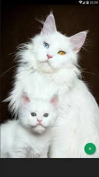
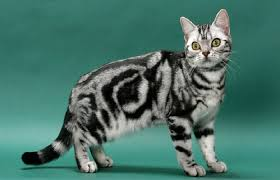
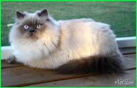

Jenis kucing yang ada di INDONESIA
Kucing ini merupakan kucing asli Indonesia, atau biasa disebut dengan istilah kucing kampung. Karena sifatnya yang liar dan bebas, kucing ini akan dengan mudah ditemukan, seperti di pinggir jalan, sekolah, lingkungan rumah, bahkan di dalam gang. Meski liar, kucing domestik terbilang ramah, bisa dijinakkan, dan dijadikan sahabat baik.
Kucing kampung/domestik memiliki berbagai kelebihan yang membuat pemelihara tidak akan merasa kerepotan. Sifat dasarnya yang mandiri, tidak manja, tidak pilih-pilih makanan, dan daya tahan tubuh yang baik, membuat kucing domestik cukup murah untuk dipelihara. Selain itu, kamu bisa menjaga rumah dari serangan tikus, lho
Kucing yang satu ini sangat populer di dunia. Kucing Persia berasal dari negara Persia, yang kini berubah nama menjadi Iran. Sama seperti Anggora, kucing jenis ini memiliki bulu yang tebal, panjang, dan cantik. Identik dengan badan gemuk, hidung pendek, dan kepala bulat, kucing Persia banyak disukai berbagai kalangan.
Kucing Persia memiliki sifat manja, senang di dalam rumah, suka dengan anak-anak, dan pembawaannya yang tenang. Tak heran, kucing ini paling umum dipelihara karena sifatnya yang jinak dan penurut. Namun, biasanya kucing Persia mudah stres apabila ditinggal sendiri oleh pemelihara, sehingga kamu perlu mempersiapkan pengasuh untuk kucing.
Kucing Turkish Angora

Angora merupakan kelompok kucing tertua di dunia. Memiliki ciri fisik yang hampir mirip dengan Persia, membuat orang banyak yang sulit membedakan kucing Persia dan Angora. Kucing angora memiliki ciri-ciri; bentuk kepala segitiga, hidung cukup mancung, dan terdapat bulu yang agak Panjang pada bagian leher.
Kucing angora memiliki karakteristik anggun, lincah, dan aktif, maka dari itu kucing jenis ini senang jika diberikan mainan. Jika kamu ingin memelihara kucing angora, kamu perlu memperhatikan kebersihannya dengan memandikan kucing secara rutin menggunakan shampoo khusus kucing anti kutu.
Kucing American Short Hair

Kamu pasti sudah tidak asing dengan jenis kucing yang satu ini. Sebab, kucing ini cukup sering muncul pada iklan makanan kucing dengan wajahnya yang memang lucu dan menggemaskan. Kucing dengan ras American Short Hair memiliki ciri fisik warna belang pada tubuhnya, ukuran badan sedang, otot kaki serta cakar yang kuat. Sesuai dengan namanya, kucing ini memiliki bulu yang pendek dan tebal.
Kucing American Short Hair dikenal kuat, cerdas, pintar berburu, ramah, tenang, senang bermain, dan mudah beradaptasi. Kucing dengan bulu tebal ini memiliki daya tahan tubuh yang kuat dan kesehatan yang baik, sehingga dapat terlindung dari cuaca ekstrem dan suhu dingin. Makanan yang disukainya adalah ikan, daging, dan ayam segar
Jika dilihat sekilas, kucing ini mirip seperti kucing domestik. Ocicat merupakan jenis kucing yang dihasilkan dari dua persilangan antara kucing Siam dan Abyssinian yang dikenal memiliki bulu pendek dengan warna cokelat kemerahan dan abu-abu kehitaman. Lalu, keturunannya dikawinkan dengan ras Amerika Short Hair, sehingga warna dan coraknya menjadi Ocicat.
Kucing Ocicat dikenal sebagai kucing yang aktif, enerjik, bersahabat, dan senang bermain dengan air. Kucing ini cukup mudah dipelihara karena makanan yang mereka makan sama seperti kucing domestik pada umumnya, dan tidak membutuhkan perawatan khusus. Meski coraknya seperti macan tutul, Ocicat terbilang ramah dan mudah beradaptasi.
Kucing Persia Himalaya

Kucing ini merupakan salah satu jenis kucing Persia yang ada di Indonesia. Sudah dikenal sejak ratusan tahun silam, Persia Himalayan ini memiliki ciri fisik yang unik. Kucing yang merupakan hasil perkawinan silang antara kucing Siam dan Persia, menghasilkan kucing dengan wajah dan ekor cokelat khas ras Siam, serta bulu yang Panjang dan lebat khas ras Persia.
Kucing Persia Himalayan memiliki karakter aktif, senang bermain, dan tidak senang bermalas-malasan. Selain memiliki warna cokelat khas Siam, kucing ini memiliki macam warna seperti abu-abu, abu-abu kecokelatan, krem, cokelat kehitaman, dan krem kemerahan. Warna bulu yang unik dengan mata berwarna biru, Persia Himalayan sungguh menggemaskan.
Kucing yang berasal dari Pelabuhan Arkhangelsk di Rusia, memiliki ciri fisik yang unik. Russian Blue merupakan kucing dengan bulu pendek dan mata hijau. Warna abu-abu di seluruh tubuhnya, memberikan kesan unik dan menggemaskan bagi siapapun yang melihatnya. Kucing ini disebut sebagai kucing cerdas di dunia.
Russian Blue memiliki karakter cerdas, mudah penasaran, sensitif, ramah, dan pemalu. Meski begitu, kucing ini memiliki hubungan erat dengan pemiliknya. Jika bertemu dengan orang asing yang belum dikenalnya, Russian Blue sedikit pemalu.
Ini merupakan jenis kucing tertua di Indonesia yang berasal dari Maine, Amerika Serikat. Berdasarkan sejarah, kucing jenis Maine Coon ini memiliki keturunan dari kucing ras angora dan Norwegian Forest. Sehingga, menghasilkan kucing dengan bulu Panjang, lebat, hidung mancung, dan badan yang tinggi besar.
Maine Coon memiliki karakter kuat, berotot, independent, aktif, dan senang pada pemiliknya. Bobot kucing ini berkisar antara 6 – 9 kg untuk jantan, dan betina berkisar 4 – 6 kg. Cukup besar dan berat untuk ukuran kucing. Sesuai dengan ukuran tubuhnya, makanan yang dikonsumsi Maine Coon adalah daging sapi, ikan, dan ayam dalam bentuk besar.
Berbeda seperti kucing pada umumnya, kucing jenis ini memiliki bulu yang sangat pendek. Sekilas seperti tidak ada bulu, Kucing Sphynx memiliki bulu halus yang tumbuh di beberapa bagian tubuh, seperti telinga, kaki, ekor, dan organ vitalnya. Meski diberi nama Sphynx, kucing ini bukan berasal dari Mesir, namun berasal dari Kanada.
Kucing Sphynx memiliki ciri fisik berbadan sedang, tegak, bulat pada bagian perutnya, leher yang panjang, berotot, dan kepala berbentuk segitiga. Karena bulunya sangat tipis, membuat kucing ini cukup mudah berkeringat, dan tubuhnya perlu dilap secara rutin. Berkarakter cerdas, penyayang, dan aktif, membuat kucing Sphynx setia terhadap pemiliknya.
warna gelap pada muka, ekor, dan kaki. Sedangkan tubuhnya berwarna putih tua, serta tubuh yang ramping, ekor panjang, dan mata berwarna biru. Siamese namanya, cukup populer di kalangan pecinta kucing, banyak orang ingin memelihara kucing yang satu ini.
Memiliki karakter cerdas, ramah, lincah, rasa keingintahuan yang tinggi, dan suara yang lembut. Membuat kucing Siamese ini semakin digemari pecinta kucing. Kamu yang melihat secara langsung, akan merasa gemas. Makanan yang dikonsumsi Siamese adalah ayam, ikan, dan daging sapi. Meski begitu, mereka juga suka dengan makanan kering dari petshop.
SEJARAH
|KARAKTERISTIK|
|PERKEMBANG BIAKAN|